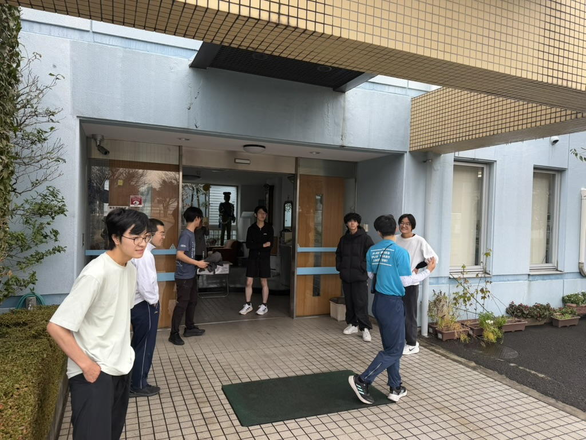
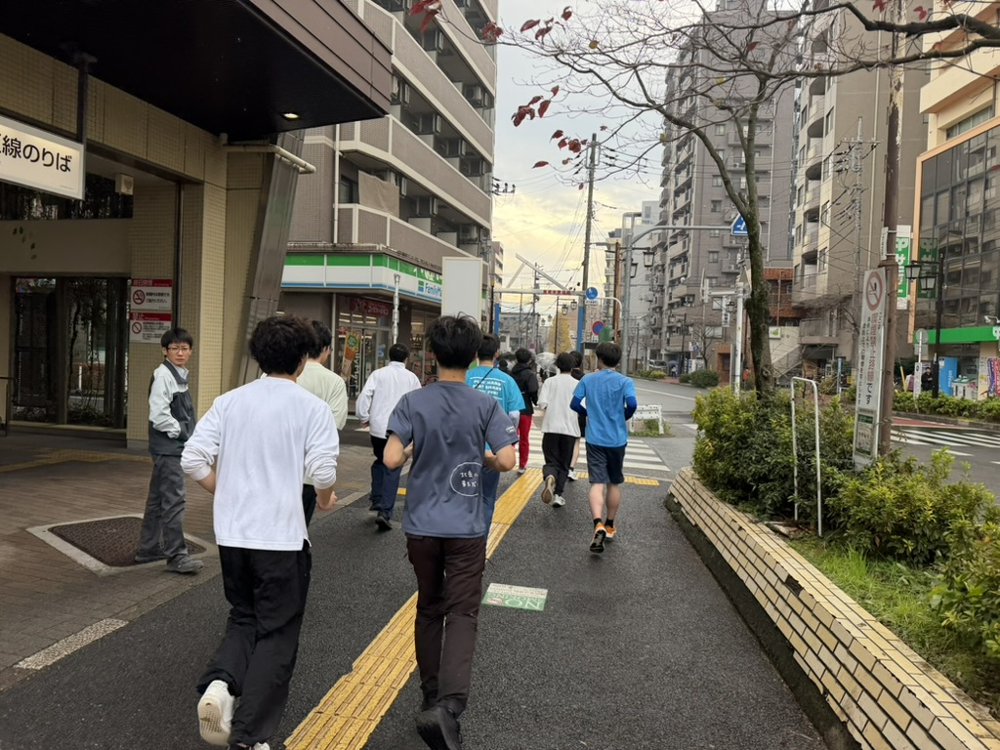
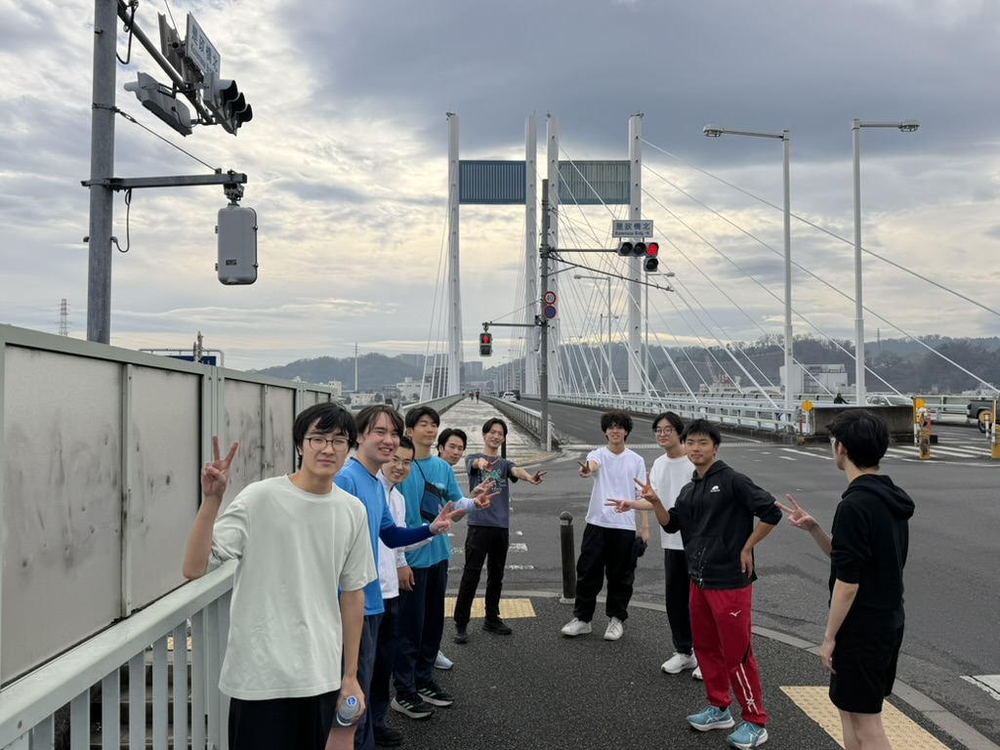

府中駅伝に向けて練習会を開催しました

2月11日（火・祝）に開催される府中市駅伝競走大会に向けて、練習会を開催しました。当日は寮生11名が参加し、寮から是政橋までの約3.3キロのコースを走りました。
練習会の様子
今回の練習会には、普段あまり走り慣れていない寮生も参加しました。それぞれのペースで走りながらも、参加者同士で声を掛け合い、励まし合いながら走る姿が印象的でした。

コースは寮を出発し、府中の街中を抜けて是政橋を目指すルートです。冬の澄んだ空気の中、寮生たちは自分のペースを守りながらも、仲間と声を掛け合いながら走り続けました。

全員が無事に是政橋まで完走し、ゴール地点では達成感に満ちた笑顔で記念撮影を行いました。「思ったより走れた」「本番が楽しみになった」といった声が聞かれ、本番の駅伝大会に向けてチームとしての結束力も高まったのではないでしょうか。
府中駅伝競走大会について
府中駅伝競走大会は、今年で第78回を迎える歴史ある大会です。府中駅前のけやき並木をスタートし、市街地を周回する5区間のコースで行われます。青雲寮は一般の部（1区間約4.1km）に出場予定です。
大会の詳細は府中市公式サイトをご覧ください。
おわりに
本番まで残り約2ヶ月。引き続き練習を重ね、大会当日は青雲寮の名を背負って全力で走り抜けたいと思います。応援よろしくお願いします！